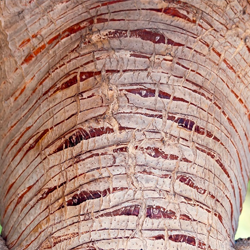
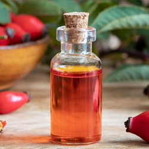

Descubra o poder do Insulderma.
Conheça a poderosa fórmula por trás da super hidratação capaz de proteger o corpo de diabéticos


Sangue de dragão
Uma poderosa seiva da árvore dragoeiro, nativa da Amazônia.. O ativo foi historicamente usado por povos indígenas por conta do seu alto poder cicatrizante para machucados.
Ozônio
Hidrata e estimula a circulação sanguínea, da pele machucada. Aumenta o aporte de oxigênio e nutrientes para a pele, tudo isso contribui para proteger a sua pele de não apodrecer.

Óleo de Rosa Mosqueta
Extraído de uma poderosa planta silvestre do mediterrâneo, é famosa por seu grau elevado de regeneração e também por manter a integridade da pele da sua pele.
Veja como o Insulderma age no seu organismo
O Insulderma tem alto poder cicatrizante, ele hidrata e auxilia na circulação sanguínea do machucado, realizando assim uma cicatrização muito rápida e eficiente.